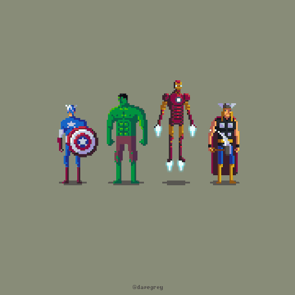

Los Vengadores son, a día de hoy, el grupo de superhéroes más famoso de la Marvel. Y parte de la culpa es de la gran película que protagoniza Hulk, Thor, El Capitán América e Iron-Man, y que ahora se lanza en DVD y Blu-Ray. Vamos a repasar la historia de la formación de Los Vengadores como grupo y sus colecciones más famosas. ¿Te apuntas?

Los Vengadores han sido un éxito indiscutible en taquilla, para muchos, la mejor película de lo que llevamos de 2012 y, seguramente, de lo resta de año. Pero Hulk, Thor, El Capitán América e Iron Man llevan entre nosotros la friolera de 49 años. Los Vengadores nacen en 1963 de la mente de Stan Lee y Jack Kirby, como respuesta a la famosa Liga de la Justicia de DC cómic que, por aquel entonces, acaparaba todos los números uno en los rankings de ventas. Aunque hay que destacar que, a diferencia de La Liga de la Justicia, donde sus integrantes eran lo más de lo más de DC (Superman, Batman, Wonder Woman…), Los Vengadores que Stan y Jack escogieron para su colección no eran superestrellas de la editorial. No en vano se trataba del grupo más dispar que se había formado hasta la fecha, con Iron Man (que debía sus poderes a la tecnología), Thor (una deidad asgariana), Hulk (una mole de poder y furia incontrolable), El Hombre Hormiga (científico transformado en héroe) y La Avispa (pareja del Hombre Hormiga que obtiene sus poderes de su ciencia). Por aquel entonces, Los Vengadores era una apuesta muy arriesgada con héroes muy raros para la época y tachados de solitarios, obligados por las circunstancias a trabajar en equipo.
Pues en el primer número del cómic de Los Vengadores, se nos narra cómo Loki, hermano de Thor de insaciable ambición, tiende una trampa a Hulk para que le consideren culpable de un accidente de tren (aunque en realidad consigue salvar a todos los viajeros). Tras esto, Loki envía un mensaje para que lo intercepte su hermano y, así, tenderle una emboscada. Por suerte para Thor, el mensaje también llega a oídos de El Hombre Hormiga, El Hombre de Hierro y La Avista. Juntos, descubren que todo ha sido una encerrona y acaban con los planes de Loki. Así nacieron Los Vengadores.
